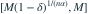

Pareto 生存函数为 ，形状 已知，。对  ，
， 的精确覆盖率为
的精确覆盖率为  的区间是？
的区间是？
， 的精确覆盖率为 的区间是？- A
- B
- C
- D

我已思考，展开答案与解析
正确答案：B
- （）。
- 覆盖条件是 ，其概率为 ；又总有 ，得到所列区间。
易错提醒Pareto 下端点不大于样本最小值，区间方向与均匀上端点相反。
JYSG · 432精选 · 册内复旦大学432·2026年·十；区间估计延伸；PDF第43页（印刷页41）
原题知识点延伸
， 的精确覆盖率为 的区间是？
；又总有 ，得到所列区间。JYSG · 432精选 · 册内复旦大学432·2026年·十；区间估计延伸；PDF第43页（印刷页41）
原题知识点延伸